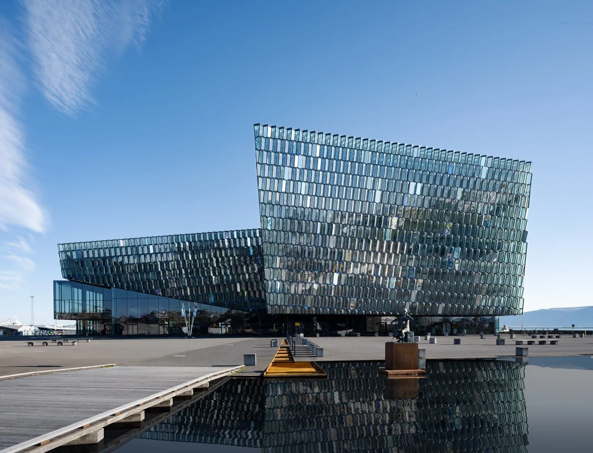

| ⚡ | Anchor | A | Burna Boy + Davido + Rema triple bill, London Stadium [23] | |
| 🚶 | Walk | B | South Bank: Tate Modern → Southwark Cathedral; or Thames Path east from Stratford | |
| 🔭 | Offbeat | A | Sir John Soane's Museum — Seti I sarcophagus, unchanged since ~1837, free [2] | |
| 🍽 | Dining | A | Rules 1798 — London's oldest; Dickens, Thackeray, Wells, Chaplin private rooms [4] | |
| 🏛 | Stay | A | NoMad London — Bow Street Magistrates' Court; original cells now police museum [3] |
| ⚡ | Anchor | A | Ali Wong "Ali Wong Live" at the Waterfront, 22 Jun [5] | |
| 🚶 | Walk | A | Södermalm Monteliusvägen cliff path over Riddarfjärden → Gamla Stan cobbled lanes | |
| 🔭 | Offbeat | A | Vrak – Museum of Wrecks, Baltic shipwreck archaeology on Djurgården [8] | |
| 🍽 | Dining | A | Den Gyldene Freden 1722, Guinness-listed; Swedish Academy's weekly table [7] | |
| 🏛 | Stay | A | Hotel Rival — 1937 Art Deco cinema; ABBA's Benny Andersson's boutique hotel [6] |
| ⚡ | Anchor | A | Edinburgh Fringe — 3,893 shows, 2.6M+ tickets, 301 venues; city becomes the show [24] | |
| 🚶 | Walk | A | Arthur's Seat summit (extinct volcano, 45 min climb) or Royal Mile festival corridor | |
| 🔭 | Offbeat | A | Surgeons' Hall — Burke's death mask, book bound in his own skin; 8th strangest in Europe [11] | |
| 🍽 | Dining | A | The Witchery — 1595 listed building; hundreds of witches burned on adjacent Castlehill; candlelit only [39] | |
| 🏛 | Stay | A | The Witchery by the Castle — gilded ceilings, four-posters, freestanding tubs, from £700 [10] |

4| ⚡ | Anchor | A | Jimmy Carr "Laughs Funny" at Harpa, 3 consecutive nights, 15–17 Dec [13] | |
| 🚶 | Walk | B | Laugavegur on dark December afternoons; geothermal valley at Hveragerði | |
| 🔭 | Offbeat | A | Phallological Museum — 280+ specimens, 90+ species; world's largest human cast added Dec 2024 [14] | |
| 🍽 | Dining | — | ⚠ Gap — no sourced story-dining entry for Reykjavík; Fiskmarkaðurinn or Dill are standard but unverified for this brief | |
| 🏛 | Stay | A | Apotek Hotel — 1917 building by Hallgrímskirkja's architect; Reykjavík's original pharmacy [15] |
| ⚡ | Anchor | B | Daniel Sloss "BITTER" with Kai Humphries; venue warns sell-out — sole CEE English touring act [17] | |
| 🚶 | Walk | A | Charles Bridge at dawn before coach groups; west into Josefov Old Jewish Quarter | |
| 🔭 | Offbeat | A | Prague's weird-museum cluster — Alchemists, Sex Machines, Castle Chamber of Horrors — deepest in Europe [40] | |
| 🍽 | Dining | A | U Fleků — documented since 1499, brewing one house dark lager continuously 500+ years, 1,200 seats [18] | |
| 🏛 | Stay | A | Almanac X Alcron — 1932 Art Deco, redesigned 2023, One Michelin Key, 204 rooms, New Town [19] |
No other city matches it. The Afrobeats triple bill (22 Jul) [1], the Bayeux Tapestry (opens 10 Sep) [28], and the Van Eyck portrait reunion (opens 21 Nov) [33] each justify a separate trip — plus West End recorded 17.64M admissions in 2025 [41].
Zürich (17 Jun), Berlin (18 Jun), Munich (19 Jun), Cologne (30 Jun), Vienna (2–3 Jul) — all in one compressed window [13]. Ali Wong plays Cologne on 2 Jul — two days after Carr. A double-comedy weekend with two different acts in the same city is unique to this window [42].
Carr at Harpa 3 nights + Phallological Museum + Apotek Hotel + Arctic December + Áramót NYE bonfires [16] — but no sourced story-dining entry. Does 4.5 axes at this intensity beat Prague's clean 5?
Budapest scores A-tier on every wrapper axis — W Budapest (1886 Drechsler Palace) [44], New York Café 1894 [46], Rácz Hotel (16th-c. Turkish bath) [45] — but the Boddah promoter has announced nothing for this window [43]. Highest-upside speculative pick.